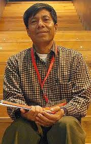
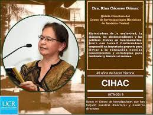

La importancia de preservar y valorar la cultura ancestral a traves de la lectura.
La falta de hábitos de lectura entre los estudiantes de la institución educativa Luis López de Mesa ha generado inquietud, ya que está afectando su rendimiento académico. Este proyecto tiene como objetivo fomentar la lectura a través de estrategias motivacionales que, además de mejorar sus competencias académicas, permitan a los estudiantes acercarse a sus raíces y tradiciones, incentivando su interés por la lectura y una mayor comprensión de su entorno cultural.
Pregunta Problema
ㅤㅤㅤ¿Cómo puede la institución educativa Luis López de Mesa fomentar hábitos de lectura entre los estudiantes para mejorar su desarrollo académico y personal, considerando el desinterés actual por la lectura fuera de las obligaciones curriculares?
Planteamiento del problema
En el colegio Luis López de Mesa, muchos estudiantes no tienen el hábito de leer por gusto. Aunque la lectura es muy importante para aprender y crecer, se ha notado que la mayoría solo lee cuando es parte de las tareas o exámenes. Esto se ve reflejado en varias áreas.
Objetivo General
ㅤㅤㅤ Motivar a los estudiantes del colegio Luis López de Mesa a leer más para mejorar en sus estudios y conocer mejor su cultura.
Objetivos Específicos
- 1.Crear actividades que hagan la lectura más divertida e interesante.
- 2.Fomentar la lectura de historias sobre nuestras raíces y tradiciones. ㅤㅤ
- ㅤㅤㅤVer cómo leer más ayuda a mejorar las notas de los estudiantes.
Delimitación
- ㅤㅤㅤEl tema lo comenzamos a desarrollar desde el 14 de marzo del año 2023 y le daremos cierre el día 13 de noviembre del año 2024.
- ㅤㅤㅤEl tema lo desarrollaremos en la institución educativa Luis López De Mesa.
- ㅤㅤㅤEl tema que realizaremos es La importancia de preservar y valorar la cultura ancestral a través de la lectura.
Línea De Acción
-
Línea 3
ㅤㅤㅤComunicación Auditiva, Visual y Escrita:
ㅤㅤㅤPotenciar la cultura a través de las voces, los lenguajes y las expresiones en los diversos escenarios del colegio mediante el desarrollo de programas comunicativos e informativos, la gestión de procesos comunicacionales en organizaciones sociales y en la institución; además de generar contenidos socioculturales que contribuyan al rescate o la consolidación de la cultura.
Marco Teórico
Autores:
Victor Montejo
- ㅤㅤㅤEscritor y antropólogo guatemalteco que ha trabajado en la preservación de la cultura maya a través de sus obras, fomentando el respeto y la valoración de la ancestralidad indígena.
Wave davis
- ㅤㅤㅤAntropólogo y escritor que ha escrito sobre culturas indígenas de América, destacando la importancia de preservar y valorar la sabiduría ancestral de estos pueblos.
Rina Cáceres Gómez
- ㅤㅤㅤEscritora guatemalteca cuya obra promueve la valoración de la cultura maya y la importancia de mantener vivas las tradiciones ancestrales a través de la lectura. 
-
Categoría 1
ㅤㅤㅤEl artículo aborda la formulación del concepto de identidad cultural regional, destacando el aspecto mental de la cultura y proponiendo una definición narrativa y discursiva. Se explora la semiosfera cultural, la memoria colectiva y la narración histórica para entender la identidad cultural regional como un relato en constante evolución que refleja la continuidad y el cambio en la región. Fecha y lugar de publicación: - Fecha: 2018 (no se especifica el mes) - Lugar: SciELO Chile, en el sitio web (link unavailable) Nota: SciELO (Scientific Electronic Library Online) es una biblioteca electrónica que publica artículos científicos de acceso abierto, y SciELO Chile es su versión chilena. SciEloCategoría 2
Gómez, J. A. (2022). Retornar al origen. Revista CLACSO, 23.
Resumen:
ㅤㅤㅤEl artículo analiza las narrativas ancestrales como herramientas de resistencia y reexistencia en comunidades indígenas, destacando su importancia para preservar la identidad cultural y luchar por derechos.Autor: Juan Alberto Gómez
Año: 2022
Título: Retornar al origen
Revista: Revista CLACSO, 23. CLASCOCategoría 3
Lévi-Strauss, C. (1958). Antropología estructural. (J. Xirau, Trad.). México: Editorial Paidós.
ㅤㅤㅤNota: La fecha de publicación original es 1958, pero la traducción al español fue publicada en 1962 por la Editorial Paidós.
ㅤㅤㅤexplicación :Ancestralidad estructural es un libro que presenta la teoría antropológica de Claude Lévi-Strauss, quien propone un enfoque estructuralista para analizar las culturas humanas. Lévi-Strauss argumenta que las culturas pueden ser entendidas como sistemas de signos y símbolos que se organizan en estructuras profundas, más allá de las manifestaciones superficiales. El libro es considerado un clásico en la antropología y ha tenido un gran impacto en la teoría social y cultural. monoskop
Terminos
Ancestralidad
ㅤㅤㅤ Se refiere a las características y cualidades transmitidas de generación en generación, vinculadas a los antepasados de una comunidad o cultura.
Tradición Oral
ㅤㅤㅤSistema de transmisión de conocimientos, historias, leyendas y valores culturales mediante la palabra hablada, de una generación a otra
Cosmovisión
ㅤㅤㅤConjunto de creencias y conceptos que una cultura tiene sobre el universo, la vida, y su propia existencia.
Patrimonio Cultural
ㅤㅤㅤConjunto de bienes, costumbres y tradiciones que una comunidad considera valiosos y desea preservar para el futuro.
Sabiduría Ancestral
ㅤㅤㅤConocimientos y enseñanzas acumulados por una cultura a lo largo de su historia y transmitidos a través de generaciones.
Identidad Cultural
ㅤㅤㅤSentimiento de pertenencia a un grupo o cultura particular, basado en el reconocimiento de valores, costumbres y tradiciones comunes.
Interculturalidad
ㅤㅤㅤInteracción y convivencia entre diferentes culturas, basada en el respeto y la comprensión mutua
Etnografía
ㅤㅤㅤEstudio descriptivo de las costumbres y tradiciones de un grupo humano particular.
Mitología
ㅤㅤㅤConjunto de mitos, historias y leyendas que forman parte de la tradición cultural de una comunidad.
Entrevista
3 Categorias
- Ancestralidad
- Lectura
- Indigenas
Preguntas Para La Entrevista
- ¿Qué significa para ti la ancestralidad?
- ¿Existen objetos o reliquias que consideres importantes en la ancestralidad?
- ¿Crees en la influencia de los ancestros en la vida diaria?
Actividades Que Se Van A Hacer
- trivia y cuestionarios
- juegos de roles
- búsqueda del tesoro cultural
- bingo cultural
- crea tu propio mito
- adivinanzas y enigmas
- simulación de juego de mesa
Referencias
Lista De Deseos
- 1. Fomentar un buen hábito de lectura para que podamos desarrollar nuestras habilidades de pensar y entender mejor.
- 2. Mejorar nuestras habilidades de escritura a través de la lectura, para que podamos expresarnos mejor y crear nuestras propias historias.
- 3. Celebrar Halloween disfrazándonos de personajes o mitos ancestrales que nos gusten o con los que nos sintamos identificados.
- Explorar nuestra identidad, conociendo más sobre nuestros antepasados y raíces.
- Desarrollar la habilidad de compartir nuestras historias y orígenes con los demás de manera fácil y natural.
Videos
Actividades
Evidencias